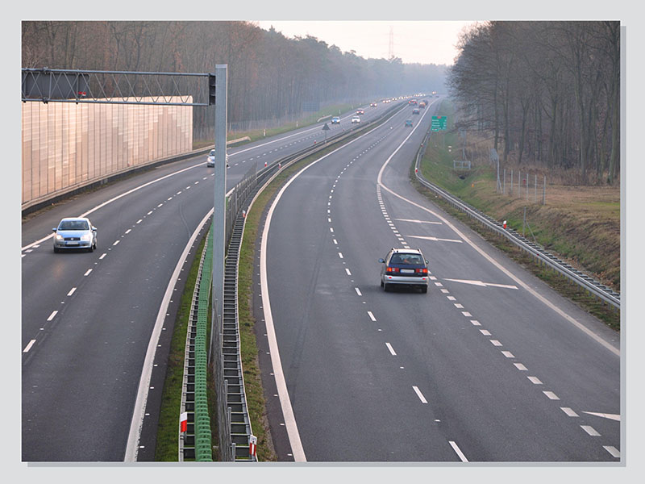

Autostrade e strade extraurbane principali

Strada extraurbana
La strada extraurbana principale è una strada a carreggiate indipendenti o separate da spartitraffico, ciascuna almeno con due corsie di marcia.Caratteristiche:
- è contraddistinta da appositi cartelli stradali di inizio e fine
- si possono trovare intersezioni (incroci) a livelli sfalsati, ma non a raso
- è provvista di corsie di accelerazione e decelerazione per ingresso e uscita dei veicoli e di apposite aree di sosta
- possono circolare solo alcune categorie di veicoli a motore (non possono entrarvi biciclette, ciclomotori e quadricicli leggeri)
- il limite massimo generale di velocità è di 110 km/h
- la segnaletica è di colore blu
Non è vero che non vi sono curve né dossi
Autostrada
L'autostrada è una strada a carreggiate indipendenti o separate da spartitraffico, ciascuna almeno con due corsie di marcia e corsia di emergenza.Caratteristiche:
- è contraddistinta da appositi cartelli stradali di inizio e fine
- si possono trovare intersezioni (incroci) a livelli sfalsati, ma non a raso
- è provvista di corsie di accelerazione e decelerazione per ingresso e uscita dei veicoli
- possono circolare solo alcune categorie di veicoli a motore
- è priva di accessi privati
- deve essere recintata lateralmente
- il limite massimo generale di velocità è di 130 km/h
- la segnaletica è di colore verde
Sono esclusi alla circolazione in autostrada:
- autovetture che non sono in grado di sviluppare una velocità di almeno 80 km/h
- veicoli con carico non opportunamente sistemato e fissato o con carico di materiale sciolto e scoperto, che può disperdersi
- veicoli non in regola con la prescritta revisione o in cattive condizioni d'uso, di equipaggiamento o di gommatura (ad esempio: pneumatici consumati, indicatori di direzione guasti)
- ciclomotori
- motocicli di cilindrata inferiore a 150 cm3
- macchine agricole e macchine operatrici
In autostrada è vietato:
- invertire il senso di marcia
- fermarsi, salvo casi di necessita (malessere o grave guasto del veicolo), sulla corsia di emergenza per un massimo di 3 ore
- chiedere o concedere passaggi (anche nelle aree di servizio)
- trainare altri veicoli (tranne i rimorchi)
- usare i proiettori a luce abbaglianti nelle aree di servizio e nei tratti provvisti di illuminazione
- gareggiare in velocità
- svolgere attività di vendita o propaganda